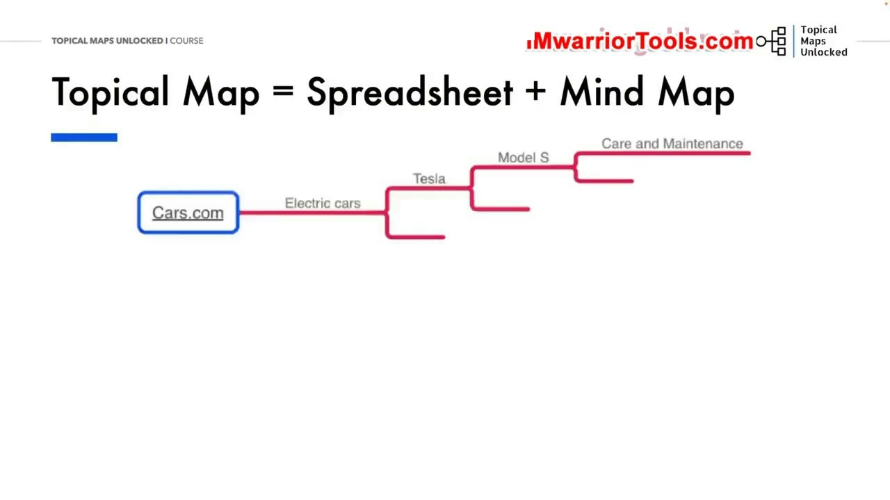
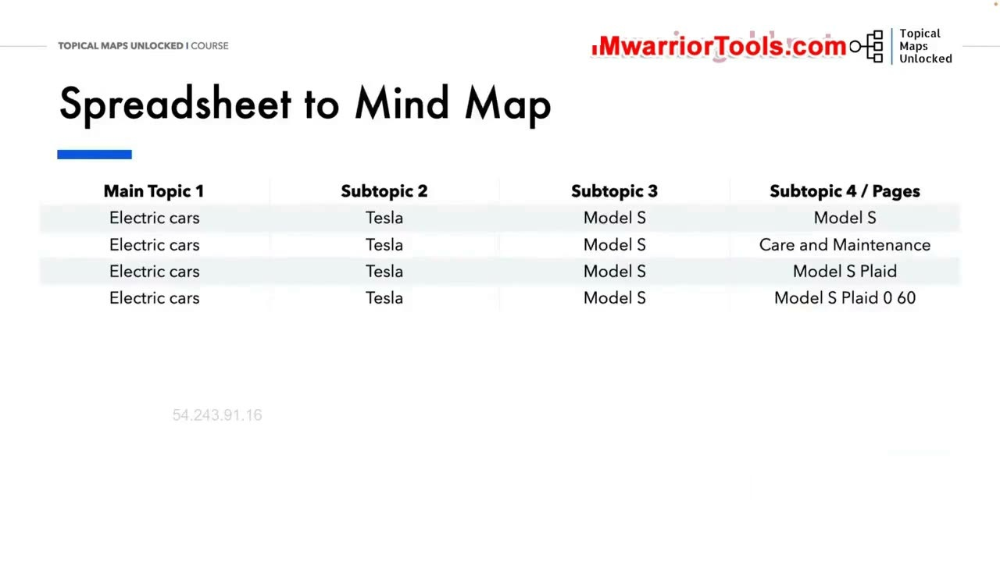
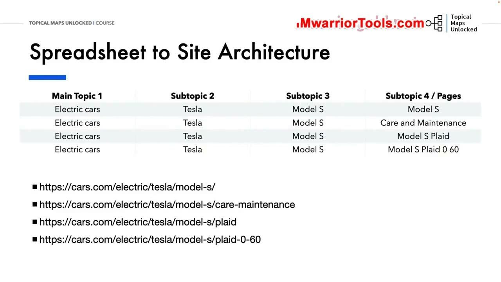

How to Read a Topical Map
1. Cấu trúc hiển thị của Topical Map: Bảng tính kết hợp Sơ đồ tư duy
Trong bài học này, Yoyao hướng dẫn người học cách đọc, đối chiếu và giải mã một Topical Map (Bản đồ chủ đề) hoàn chỉnh một cách bài bản nhất. Về mặt hiển thị thực tế trong công việc hàng ngày, bản đồ chủ đề luôn tồn tại song song dưới hai định dạng trực quan bổ trợ cho nhau: một Bảng tính chi tiết (Spreadsheet) và một Sơ đồ tư duy (Mind Map) phân nhánh cây logic.
Bảng tính đóng vai trò là cơ sở dữ liệu có cấu trúc lưu trữ toàn bộ các trường thông tin quan trọng: từ cấp bậc phân cấp chủ đề, đường dẫn URL dự kiến, chỉ số độ khó từ khóa cho đến khối lượng tìm kiếm. Trong khi đó, sơ đồ tư duy là biểu diễn đồ họa trực quan giúp bạn và toàn bộ đội ngũ sáng tạo nội dung có thể nhìn thấy ngay lập tức luồng phân nhánh của các cụm chủ đề chỉ trong vài giây lướt mắt qua màn hình.
Việc kết hợp cả hai định dạng này giúp người quản trị website vừa có cái nhìn vĩ mô bao quát về cấu trúc tổng thể, vừa kiểm soát được các chi tiết vi mô trong từng bài viết cụ thể.

2. Đối chiếu bảng tính sang sơ đồ tư duy: Cột dữ liệu thành các nhánh cây
Để đọc hiểu bản đồ một cách chuẩn xác, bạn cần nắm rõ nguyên tắc ánh xạ (mapping) trực tiếp giữa các cột trong bảng tính và các cấp nhánh trên sơ đồ tư duy:
- Cột Main Topic 1 (Chủ đề chính cấp cao): Ánh xạ trực tiếp thành nhánh cấp 1 xuất phát từ gốc website (ví dụ: chuyên mục
Electric carsxuất phát từ trang chủ Cars.com). - Cột Subtopic 2 (Chủ đề phụ cấp 1): Ánh xạ thành nhánh con cấp 2 gắn liền trực tiếp với Main Topic (ví dụ: thương hiệu xe điện nổi tiếng
Tesla). - Cột Subtopic 3 (Chủ đề phụ cấp 2): Ánh xạ thành nhánh con cấp 3 chi tiết hơn (ví dụ: dòng sedan cao cấp
Model S). - Cột Subtopic 4 / Pages (Trang bài viết cụ thể): Ánh xạ thành các lá bài viết cụ thể ở cấp cuối cùng của nhánh cây (ví dụ: các bài viết thực thi
Care and Maintenance, đánh giáModel S Plaidhoặc thông sốModel S Plaid 0-60).
Cách ánh xạ mạch lạc này giúp biến những hàng và cột dữ liệu khô khan trong Google Sheets hoặc Microsoft Excel thành một cấu trúc cây nội dung sống động, trực quan và cực kỳ dễ hiểu đối với bất kỳ ai trong đội ngũ.

3. Chuyển hóa cấu trúc bản đồ thành Kiến trúc thư mục URL website
Một trong những ứng dụng thực tiễn quan trọng và giá trị nhất của việc đọc hiểu Topical Map là khả năng chuyển hóa trực tiếp cấu trúc cây nội dung thành Kiến trúc đường dẫn thư mục URL (Site Architecture) chuẩn mực cho website.
Trong ví dụ minh họa về dòng xe điện Tesla Model S, cấu trúc thư mục URL được phân cấp hoàn hảo theo từng tầng bậc logic từ nông đến sâu:
https://cars.com/electric/tesla/model-s/(Trang trụ cột Pillar Page giới thiệu tổng quan về dòng xe Tesla Model S).https://cars.com/electric/tesla/model-s/care-maintenance(Trang hỗ trợ chuyên sâu về quy trình bảo dưỡng, sạc pin và chăm sóc xe).https://cars.com/electric/tesla/model-s/plaid(Trang đánh giá chi tiết về phiên bản hiệu năng cao ba động cơ Plaid).https://cars.com/electric/tesla/model-s/plaid-0-60(Trang phân tích thông số kỹ thuật khả năng tăng tốc kỷ lục từ 0 đến 60 mph).
Nhờ cấu trúc URL phân cấp rõ ràng và có tính dự đoán này, cả người dùng thực tế lẫn bot của Google đều hiểu ngay lập tức mối quan hệ phụ thuộc cha - con giữa các trang nội dung. Cấu trúc thư mục ngăn nắp này tối ưu hóa tối đa dòng chảy sức mạnh liên kết nội bộ, giúp trang web dễ dàng xác lập thẩm quyền chuyên môn vững chắc trong mắt các thuật toán tìm kiếm.

Nguồn và đối chiếu
- Topical Maps Unlocked 2.0 · 02-How to Read a Topical Map (Video bài học chính).
- Đối chiếu ngữ nghĩa với bản tiếng Anh: Bản Tiếng Anh/04-Tropical Maps Module/02-How to Read a Topical Map.mp4 (xác thực nguyên tắc ánh xạ bảng tính sang Mind Map và cấu trúc URL phân cấp).